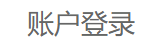

openApp(r"C:\Program Files (x86)\Google\Chrome\Application\chrome.exe")
wait(3) # waits 5 seconds
type("l", KeyModifier.CTRL) # press lowercase L + CTRL
type("vip.jd.com\n")
type(Key.ENTER)
type("\n")
wait(6)
dir = getBundlePath()
reg = Region(1358,383,466,371)
#reg.getScreen().capture(reg).getFile(dir, "captcha")
login1 = 
login2 =
signbtn =  confirm =
if exists(login1):
click(login1)
wait(2)
click(login2)
wait(5)
if exists(login2):
reg.getScreen().capture(reg).getFile(dir, "captcha")
print "oops"
elif exists(confirm):
click(confirm)
click(signbtn)
else:
click(signbtn)
wait(2)
#click("1532686100088.png")
confirm =
if exists(login1):
click(login1)
wait(2)
click(login2)
wait(5)
if exists(login2):
reg.getScreen().capture(reg).getFile(dir, "captcha")
print "oops"
elif exists(confirm):
click(confirm)
click(signbtn)
else:
click(signbtn)
wait(2)
#click("1532686100088.png")